קורס מדיה לאקטיביסטים
שיעור מספר 2 - טוויטר ואינסטגרם
נוצר על ידי Tailor Vijay / @tailorvj
טוויטר
היסודות של טוויטר
סטטוסים עד 140 תווים
תיוגים @username
הפצה לערוצים #channel
שיתוף סטטוסים Retweet
דיון Reply
רשימות Lists
אוספים Collections
מעקב Follow
הודעות פרטיות DM
קישורים מקוצרים
לדוגמא: http://bit.ly/1rs9j7l
דוחות: http://bit.ly/1rs9j7l+
גם אתם יכולים: http://bitly.com
חיפוש
מובילים / הכל
סוגי מדיה שונים
תצוגת חברים בלבד
טוויטר ככלי לשיתוף חדשות
TweetDeck
טוויטר לצרכני חדשות
טיפים לטוויטר
זהו דמויות מובילות בתחום שאתם עוסקים בו
תייגו @דמויות מובילות בסטטוסים שלכם
זהו #ערוצים שיש לכם מה לתרום בהם ופרסמו סטטוסים עם #האשטג מתאים
שימו לב לקצב הפרסומים
מצבו את @עצמכם כמומחים #בתחום שאתם מפרסמים בו
עצבו את הפרופיל שלכם
עיקבו חזרה אחרי אנשים שעוקבים אחריכם
סטטוס בלי קישור לאנשהו זה לא סטטוס
שימו לב לקצב הפרסומים שלכם
כמה חשבונות לדוגמא
פוליטיקאים, כלי תקשורת, עיתונאים, עיתונות אזרחית, פעילים חברתיים
@tamarzandberg @regev_miri @Syechimovich @naftalibennett @StavShaffir @NitzanHorowitz @Tzipi_Livni @netanyahu @IsraeliPM @Israel_MOF @knesset99 @KnessetIL @Jerusalem_Post @haaretzcom @TimesofIsrael @TheMarker @calcalist @globesnews @hazinor @news24hisr @Reshettv @GLZRadio @channel10 @Channel2News @haaretz @nana10 @einatfishbain @davidhorovitz @NadavEyalDesk @NadavPerry @amit_segal @alonbd @AyalaHasson @EytanAvriel @AsherSchechter @peretzsami @grolnik @drorfo @amsterdamski2 @alexpo @guyzo @talschneider @hkim14050017 @ha_makom @mekomit @ygurvitz @tsooff @Ha_Matar @haimhz @hamishmar @the7i @HolesNet @EldadYaniv @SylvieKeshet @chickos99 @activestills @DaphniNLeef @RikiKohan @OrLyBarlev @Yomgashum @kalkelan @Eyalo365 @aradaki @tailorvj
מפייסבוק לטוויטר על אוטומט
אפליקציות נוספות שמפרסמות לטוויטר
Tumblr
WordPress
UStream
YouTube
ועוד...
אינסטגרם
תמונות ריבועיות
פילטרים
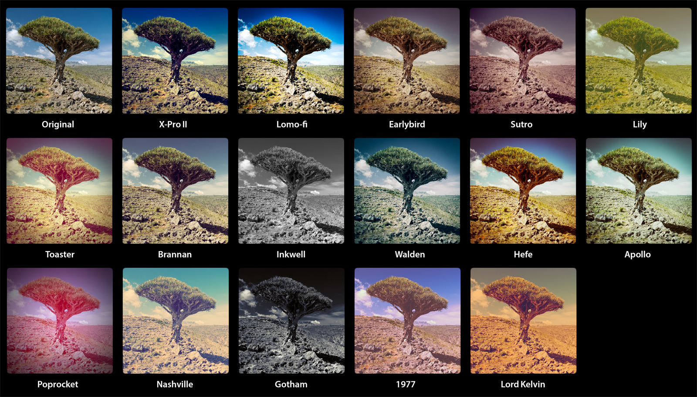סרטונים קצרים
תכונות דומות לטוויטר
#האשטגים
@משתמשים
טקסט
מיקום
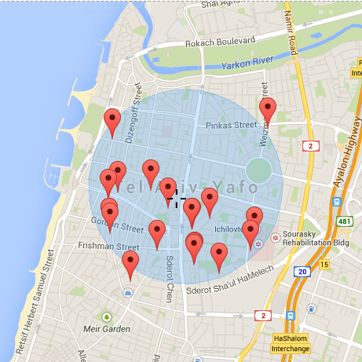שיתוף לרשתות חברתיות
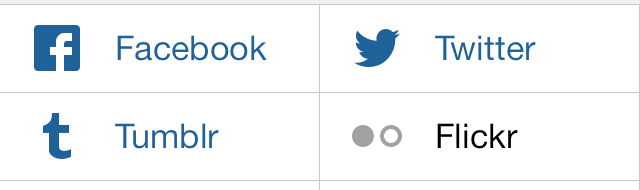פייסבוק
טוויטר
טאמבלר
פליקר
ולסיכום
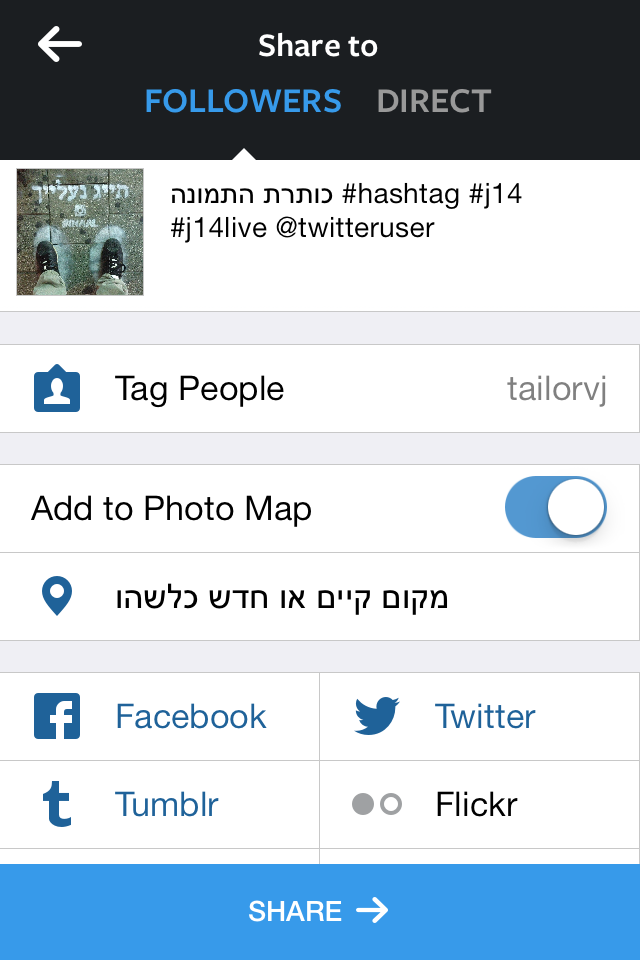יסודות בצילום
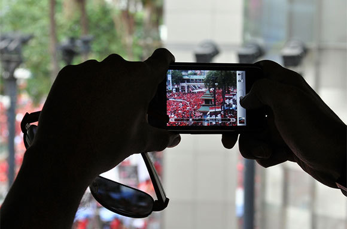תאורה
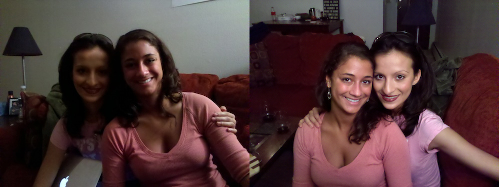פלאש
זום דיגיטלי
פוקוס
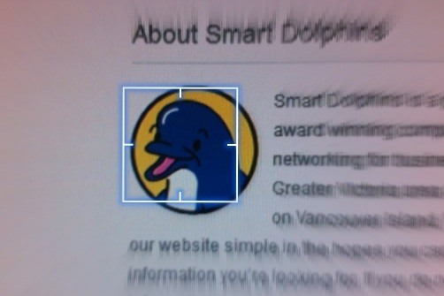White Balance
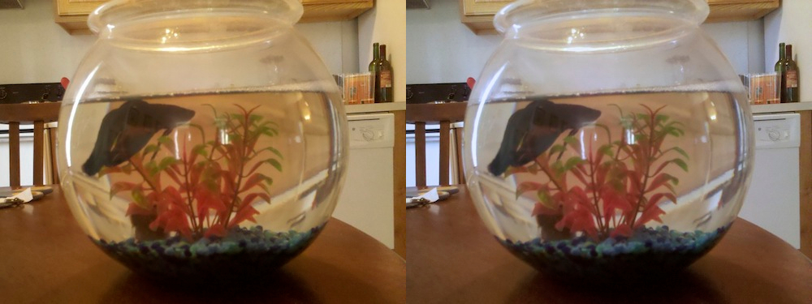חלוקת הפריים - שלישים
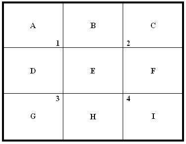חלוקת הפריים - שלישים
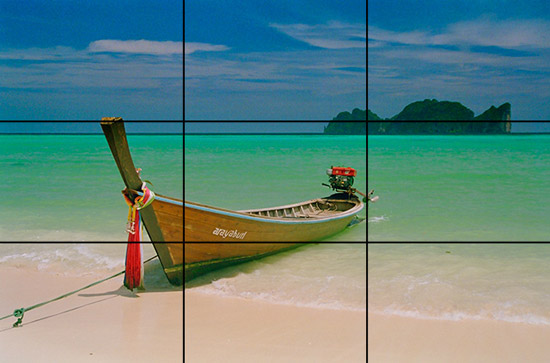חלוקת הפריים - נקודות מפגש
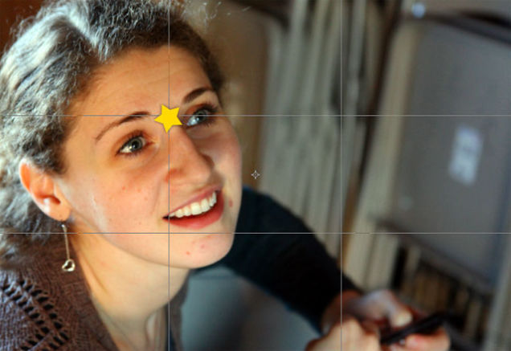חלוקת הפריים - סדרת פיבונאצ'י
חלוקת הפריים - סדרת פיבונאצ'י
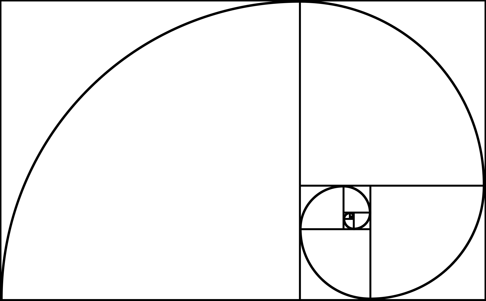חלוקת הפריים - סדרת פיבונאצ'י
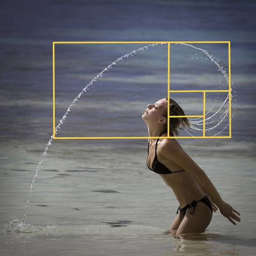מדווחים מהשטח
- מי?
- מה?
- מתי?
- מדוע?
- מקום
ממים memes
תודה רבה
Tailor Vijay | tailor.vj@gmail.com | @tailorvj